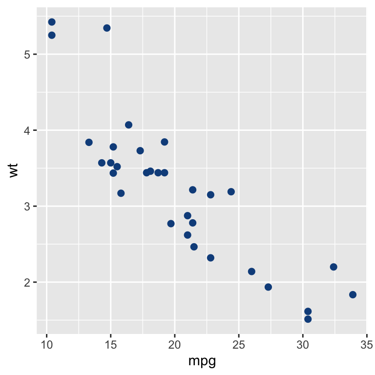
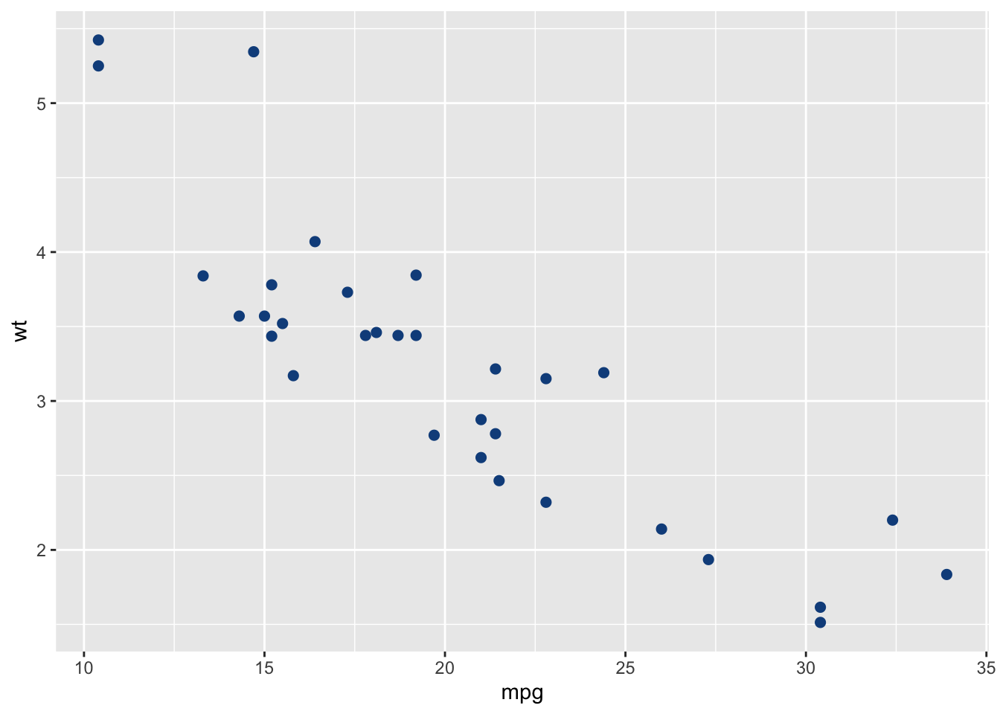
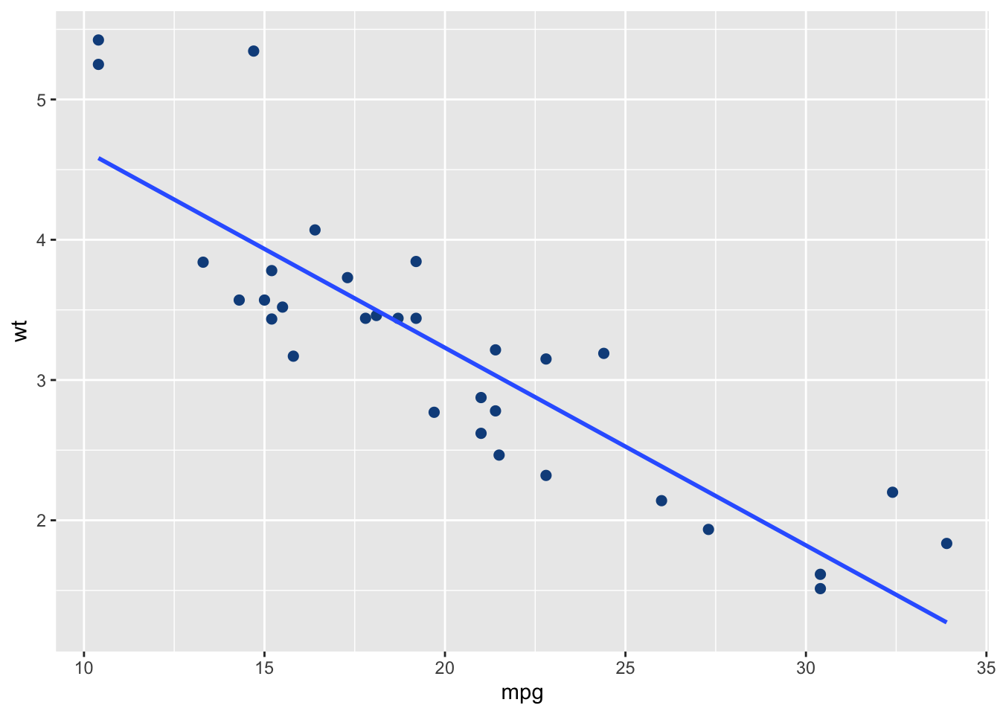

data(mtcars)
cor(mtcars$mpg, mtcars$wt)Project Example 1
stuff here
Section 1: Some stuff here
Ploting some data for funzies.
Sub-section of 1: some smaller stuff here
Some other data stuff.
Header of smalles items
blah blah here
- bulleted item 1
- the second whatever
- blah blah one
- blah two
- blah three
text can be bold or italics, or strikethrough
my website is https://rsm-jeg031.github.io/ or here
Section 2: some math stuff
if you want inline math \(y = mx + b\)
\[ \int_o^1 x^2 dx = \frac{1}{3} \]
some latex math below
\[\begin{align} y &= a(b+c) \\ &= ab + ac \end{align}\]
Section 3: code sytax for neat looking pages 😎
you can do inline code like so sqrt(2) then add the language prior to the line of code to get the result 1.4142136
show the code, hide results
show the results, hide the code
[1] -0.8676594Section 4: plots
library(ggplot2)mtcars %>%
ggplot(aes(mpg, wt)) +
geom_point(col="dodgerblue4", size=2)
Section 5: Tables
mtcars[1:5,] mpg cyl disp hp drat wt qsec vs am gear carb
Mazda RX4 21.0 6 160 110 3.90 2.620 16.46 0 1 4 4
Mazda RX4 Wag 21.0 6 160 110 3.90 2.875 17.02 0 1 4 4
Datsun 710 22.8 4 108 93 3.85 2.320 18.61 1 1 4 1
Hornet 4 Drive 21.4 6 258 110 3.08 3.215 19.44 1 0 3 1
Hornet Sportabout 18.7 8 360 175 3.15 3.440 17.02 0 0 3 2knitr::kable(mtcars[1:5,])| mpg | cyl | disp | hp | drat | wt | qsec | vs | am | gear | carb | |
|---|---|---|---|---|---|---|---|---|---|---|---|
| Mazda RX4 | 21.0 | 6 | 160 | 110 | 3.90 | 2.620 | 16.46 | 0 | 1 | 4 | 4 |
| Mazda RX4 Wag | 21.0 | 6 | 160 | 110 | 3.90 | 2.875 | 17.02 | 0 | 1 | 4 | 4 |
| Datsun 710 | 22.8 | 4 | 108 | 93 | 3.85 | 2.320 | 18.61 | 1 | 1 | 4 | 1 |
| Hornet 4 Drive | 21.4 | 6 | 258 | 110 | 3.08 | 3.215 | 19.44 | 1 | 0 | 3 | 1 |
| Hornet Sportabout | 18.7 | 8 | 360 | 175 | 3.15 | 3.440 | 17.02 | 0 | 0 | 3 | 2 |
Bonus stuff:
note title
some dash
A tabset panel
p
`geom_smooth()` using formula = 'y ~ x'